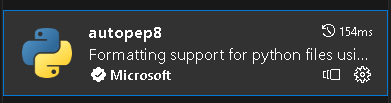
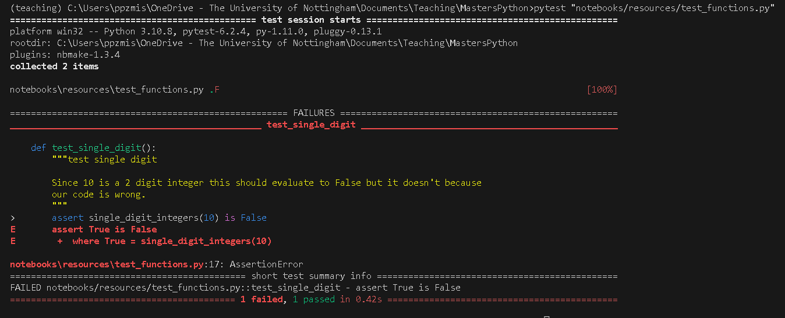
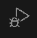
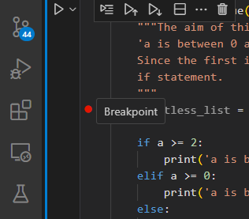
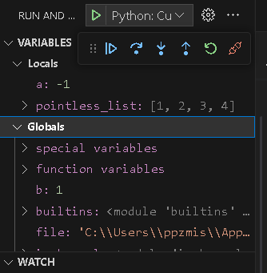

9 Testing, Debugging and Refactoring#
Not even the best programmers in the world sit down at their computers and write the perfect code in one pass.
The code may not work - there is a mistake in the program’s logic which means it does not run as we expect (bugs)
The code may not be very clear - code needs to be readable / understandable if we are to use it efficiently, extend or modify it.
These might seem like separate issues but being consistent and clear in the way we code is a good way to reduce the number of bugs and improve our success rate at writing code that works. It will also help us debug code much faster, so we will look at this aspect first.
9.1 Writing “Clean Code”#
Python due to its basic design philosophy is a very “free” language with few restrictions. However, with power comes great responsibility! That freedom can turn into spaghetti code that is impossible to unravel. Sometimes throwing it away and starting from scratch is quicker than picking up and understanding an old project.
Instead of restrictions, python has guidelines. The most important of these is PEP 8. This document isn’t too long and it is worth flicking through. The document is infused with a desire for consistency mixed with pragmatism. It is the sum product of a lot of very experienced python programmers and so shouldn’t be discarded lightly.
9.1.1 The Zen of python#
The underlying philosophy is nicely expressed in this famous poem from PEP 20:
Beautiful is better than ugly.
Explicit is better than implicit.
Simple is better than complex.
Complex is better than complicated.
Flat is better than nested.
Sparse is better than dense.
Readability counts.
Special cases aren't special enough to break the rules.
Although practicality beats purity.
Errors should never pass silently.
Unless explicitly silenced.
In the face of ambiguity, refuse the temptation to guess.
There should be one-- and preferably only one --obvious way to do it.
Although that way may not be obvious at first unless you're Dutch.
Now is better than never.
Although never is often better than *right* now.
If the implementation is hard to explain, it's a bad idea.
If the implementation is easy to explain, it may be a good idea.
Namespaces are one honking great idea -- let's do more of those!
I’d recommend every so often looking at some of your code and then reading this and seeing how it matches up.
9.1.2 Tools to make style easy#
Modern python / IDEs can make this process easier. Code formatters can be setup which can either point out where your code deviates from the style guidelines or be configured to reformat the code when you save it etc. pycodestyle, autopep8, black.
Many of these can also be setup with an extension in vscode.
I also recommend the autodocstring extension which will create a template docstring based on your function or class definition.
However, these won’t do everything for you. Get into the habit of trying to write good clean code. For example, using good descriptive variable, function and class names with the correct formatting:
type |
format |
|---|---|
constant |
ALL_CAPS_WITH_UNDERSCORES |
variable |
lower_case |
function |
lower_case |
class |
FirstLetterCaps |
n.b at least for the moment I can only get some of these extensions to work in scripts, not jupyter notebooks (if you know how I’d like to know!)
9.1.3 Structure#
One of the biggest helps to making code easy to follow is structuring and laying out your code logically. Within a single script this can be done by placing functions in logical groups, ordering things in relation to how they are called by your code.
As your code expands you can place related functions and classes into their own modules and then group modules together in packages. However, just as we discussed when writing classes, it is better to have more, smaller modules, where each has a very definite purpose rather than one huge file called allmyfunctions.py.
9.1.4 Writing Pythonic Code#
As described in the zen of python, code needs to be simple without being simplistic. Python is a very expressive language. When written well it is clear what bits of code mean, even in the absence of good docstrings. As a simple example:
for letter in alphabet:`
is much clearer than:
for idx in range(len(alphabet)):
letter = alphabet[idx]
9.1.5 Docstrings and comments#
When writing longer bits of code it is important to view a function or class docstring as an important piece of the code and not an afterthought. Code with a docstring saves enormous amounts of cognitive work, both when using or modifying. However, there is nothing more frustrating than reading a docstring which explains how code works and finding that, this is not in fact how it works! The code was changed but the docstring was not updated at the time. It takes real discipline but when you change code update the docstring at the same time.
Docstrings are the lines directly follow a function or class definition. These are really good and should be present all the time. However, comments shouldn’t be used too much. Beginners are often told to comment their work. This can often result in over commenting which clutters a program and makes it harder to read. If code is written well in small chunks, with good docstrings then comments are not always necessary. One might add occasional comments where a particular line is hard to understand but often it is better to change the code to make it more obvious how it works.
9.2 Testing code#
The simplest way to test your code is to run it and check it does what you think it should! It is quite a common problem however to write some code, test it in this way and then having later made changes to the code discover it no longer works that way. In bigger projects it could go unnoticed for quite some time that part of the code is broken. Fortunately, you now know how to roll back changes in github so it is not irretrievable! However, it is better if you can know immediately when making changes that all your code still works. This helps you spot bugs, makes it easier to fix and more confident that your code is in working order.
If you have very small program then the simplest way to create a test is to use the assert statement. This can be written directly into your code. It asserts that a certain statement is True. If it is the test passes and has no affect on your code. If it is False then it throws an error with a message.
assert correct_value == 5, 'Hmm looks like a bug in your buggy function'
A more long term approach is to use a testing framework. This allows you to write small bits of code to test different parts of your program. These can then be run in an automated fashion passing or failing and therefore highlighting an issue if changes you’ve made have broken something.
Python has two main testing frameworks:
Both contain very similar ideas. We will demonstrate using pytest as this is a little simpler to use.
9.2.1 Pytest#
Running tests on a module of code is more common in conventional scripts than a Jupyter notebook but it can be done in both. Let us suppose that we want to write tests for the following simple function:
def single_digit_integers(number):
"""This function tests if a supplied number is an integer and only one digit. It
should only evaluate True if number in [0,1,2,3,4,5,6,7,8,9]
Note for the purposes of demonstation this code works with any integer not just numbers 0-9
so we can see tests showing up issues with the code.
"""
if type(number) == int:
return True
else:
return False
To write tests we need to start our function names with test_ or end with _test. These test functions are normal functions containing an assert statement that should evaluate to True if the test passes. Here I’m firstly testing that the returned type is an integer. This test should pass. Secondly I’m testing that only single digit integers pass. Since the original function doesn’t implement this, supplying 10 should cause the test to fail.
def test_integer():
"""test that a 10 is an integer
Since 10 is an integer this test should pass
"""
assert single_digit_integers(10) is True
def test_single_digit():
"""test single digit
Since 10 is a 2 digit integer this should evaluate to False but it doesn't because our code is wrong.
"""
assert single_digit_integers(10) is False
If running a script I can run the tests from the terminal like this:
pytest
This searches my entire project for tests. I can restrict it to just a particular file:
pytest "notebooks/resources/test_functions.py"
or even a particular test function (test_func) in a particular file (test_functions.py)
pytest "notebooks/resources/test_functions.py::test_func"
Alternatively if my tests are in a Jupyter notebook we should import ipytest
import ipytest
ipytest.autoconfig()
We then decorate each cell containing tests with
%%ipytest
Using the test_functions.py file discussed above the output looks like this:
The report highlights that one test passed and one test failed. It shows me where the test failed.
9.2.2 When should I write tests?#
There is no point writing tests for code that is to be used once for some quick dataanalysis. However, if you are writing code that is to be reused, or code that will be used by other code later on, tests can be really helpful. The danger is that without tests you refactor code and inadvertantly introduce a bug. Since other code depends on what you have done, you could be breaking other bits of code without realising. There is a tradeoff here but generally speaking, the bigger and more longterm the project the more it should rely on these automated tests.
Once you have these tests you can run them each time you plan to push changes to a repository. They don’t guarantee everything is perfect but they should catch a lot of issues.
There is a lot more to testing but we will leave you to explore.
9.3 Debugging code#
If you test or develop code you will spend a lot of time trying to find and fix bugs. The main issue in trying to find a bug is to check that the variables etc have the values you expect at different points in the program. This helps you to check that the logic of your code does what you want. Where the variables or actions of the program do something unexpected you can analyse why and correct the code to fix the bug.
The simplest approach which is quick and dirty but ultimately still used, is to use the python print() statement at various points in your code to examine the value of different variables. I still use this approach for small issues and it works fine. The downside with this approach is you can quite quickly end up with print statements littered throughout multiple modules. It also often means that even when you find the bug a small change to one line requires you to run the entire code to check if the updated logic will work.
Modern IDEs come with a suite of debugging tools that can help make this process easier. Below we will explore a very simple example. A function that doesn’t behave exactly as expected. Debugging can be done in both a main script or the Jupyter notebook. In VsCode clicking on the bug on lefthand toolbar to open debugging view.
To run a script in debug mode click the arrow to the side of the run button (top right of script) and select Debug python file. In Jupyter notebook each cell can be debugged by similarly clicking the arrow to the right of the run button next to each cell.
def categorise_value(a):
"""The aim of this function is any number from 0 to 2 should result in:
'a is between 0 and 2 inclusive' being printed out. However, there is a deliberate bug.
Since the first if is a >= 2 rather than a > 2 the value 2 will end up in the top
if statement.
"""
pointless_list = [1,2,3,4]
if a >= 2:
print('a is bigger than 2')
elif a >= 0:
print('a is between 0 and 2 inclusive')
else:
print('a is less than 0')
b=1
categorise_value(2) # Expecting this to print out a is between 0 and 2 inclusive, but the bug means it doesn't
a is bigger than 2
9.3.1 Break points#
The equivalent of putting print statements in your code is to add a breakpoint. This is a position that will pause the code so you can examine the values of all the variables, trial a quick line of code etc. To create a breakpoint click in the margin to the left of the code.
Running in debug mode I have some controls. The left hand play button will run the code stopping at the next break point. The downwards arrow will step through the code, following the execution of the program, one line at a time.
If we run the debug on the above cell pressing the play button twice brings us to the line if a>=2:. The Locals variable window shows us the values of all variables in the current scope. Since we are inside the function only a and pointless_list are visible. However, b which is in the wider scope is listed under Globals
The breakpoints window shows us a list of all the current breakpoints. We can turn these on or off and delete them when no longer needed, without having to search through our code.
When the debugger is stopped at a breakpoint we can try small snippets of code using the debug console. This is a tab in the terminal window. This inherits all the values of the variables at the current point in the program being debugged. This means I can check the output of the the first if statement. I can then try an alternative to check that if I input a > 2 it will produce False.
9.4 Refactoring code#
Refactoring is a process of making changes to improve code quality. Why would you want to change code that already works? A key feature of code is that it is not just read by computers but to be useful must be read and understood by people. That person may even be you in several months time. What seemed obvious when it was written then seems like an incomprehensible spaghetti mess! Making code clearer, more readable makes it easier to use, easier to modify or maintain.
Good refactoring consists of many of the elements we have already introduced such as writing “clean code” - naming, structuring, making code logical, clear and explicit rather than convoluted. Refactoring is a kind of continuous iterative process. When we revisit code and find it hard to understand, or recognise it could be written better, we should spend a bit of time improving it.
9.4.1 Code Smells#
Code smells are patterns that help us recognise when code needs refactoring. Many of these are failures to do the sort of things we discussed under clean code:
Structure your code into modules of related functions and classes. Even within a module think about how to layout the code to make most sense.
Duplication of code DRY (Don’t repeat yourself). Where we recognise a repeated bit of code we can abstract this to a single function helping maintainability and readability.
Overly long functions or classes that try to do everything. Remember the SRP - Single responsibility principle or YAGNI - You ain’t gonna need it. We can refactor by splitting these up into smaller more focussed chunks of code making it easier to understand.
Overly complex convoluted logic. “Explicit is better than Implicit, Simple is better than complex”.
Think about how you name things to make the meaning obvious. Don’t hard code numbers into your code but assign them to a meaningfully named variable.
value > THRESHOLD
rather than
value > 105
Remove redundant code
Ensure docstrings are up to date and reflect what the code actually does.
Resources#
Helpful webpage about Refactoring code
Fantastic pdf book on the subject Clean Code by Robert C. Martin